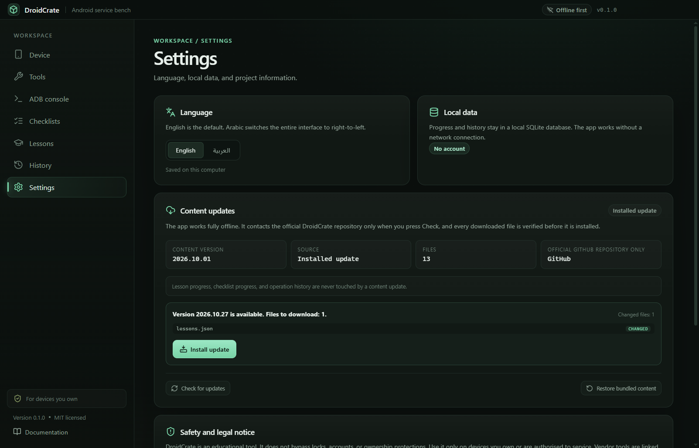

Read the USB mode
Identifies ADB, Fastboot, Download, EDL, and BROM devices from Windows Plug and Play identifiers, matched against an editable rules file, with the official next step.
Know the device. Use official tools. Follow the checklist.
A free, open-source workbench for servicing Android phones you own: reads the USB mode from Windows, links only official vendor pages, gates risky steps behind ownership checklists, and teaches the boot chain with lessons and quizzes. Everything except optional content updates works offline.
SHA-256
8c785fbaffd9f9472082bd87f84c634db077616fd4cbb4f0529008de8529789c

Four connected tools instead of a folder of loose utilities and forum links.
Identifies ADB, Fastboot, Download, EDL, and BROM devices from Windows Plug and Play identifiers, matched against an editable rules file, with the official next step.
16 tools with official links. Vendors that do not publish a direct download are marked support-only; no installers, firmware, or cracked builds ship with the app.
Five checklists, 46 ordered steps, an ownership gate before any risky flow, and progress stored locally so a repair can be paused and resumed.
Nine lessons across three levels with explanations, quizzes at a 60% pass mark, and an operation history you can search, filter, and export to TXT or CSV.
Every screen is designed for a keyboard and a 1280-wide window; Arabic switches the whole interface to right-to-left.



These are product rules, not missing features. They are enforced in the code, not only in the documentation.
The installer is unsigned, so Windows SmartScreen may warn about an unknown publisher. Verify the checksum before running it.
Get-FileHash .\DroidCrate-0.1.0-Setup.exe -Algorithm SHA256 and
compare the result with the value above.
Yes. The code and data are MIT licensed. There is no paid tier, no account, and no closed-source component.
No. Lessons, tools, checklists, and history are bundled and local. It contacts the official repository only when you ask it to check for content updates.
No. DroidCrate does not bypass locks, accounts, FRP, or ownership protection and offers no tool for that purpose.
Only from the vendor's own site. When a vendor publishes no direct download, the app opens the official support page and labels the tool as support-only.
No. USB identifiers are read locally, command output stays in the local history database, and nothing is uploaded.